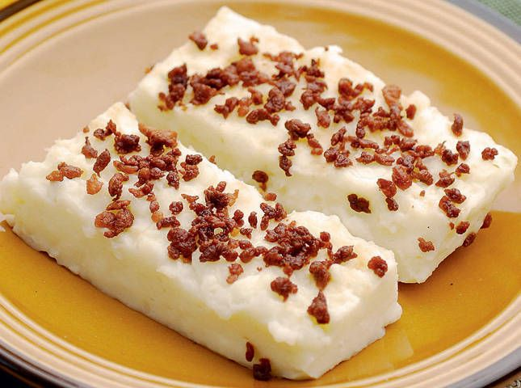

Adobong-Talong
Recipe

Tibok-tibok
Recipe

Kapampangan cuisine is a traditional cuisine that originates from Pampanga, a province in the Central Luzon region of the Philippines. It is known for its rich and complex flavors that are influenced by Spanish and Malay cuisine, as well as the local ingredients and cooking techniques of the Kapampangan people.
Kapampangan cuisine is often characterized by its use of bold and strong flavors, such as the sourness of vinegar, the saltiness of fish sauce, and the spiciness of chili peppers. It also features a wide variety of meat dishes, including pork, beef, and chicken, as well as seafood and vegetables.
Some of the most well-known Kapampangan dishes include Sisig, which is made from parts of the pig's head and liver, Kare-Kare, a stew made with oxtail and peanut sauce, and Adobo, a popular Filipino dish made with meat marinated in a mixture of vinegar, soy sauce, garlic, and other spices. Kapampangan cuisine also features exotic ingredients such as frogs, crickets, and wild boar.